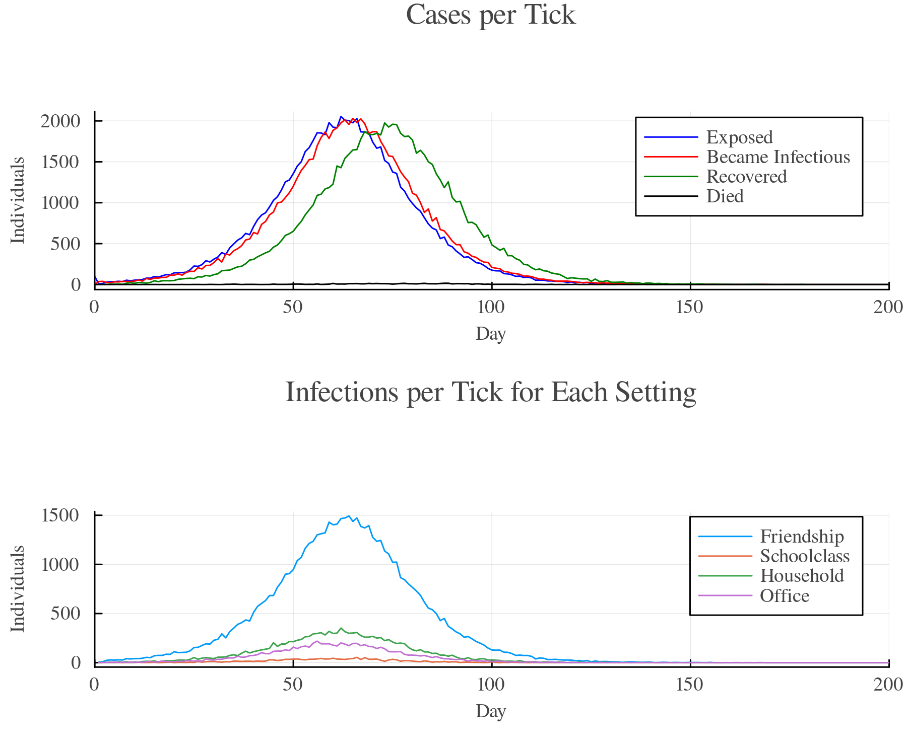
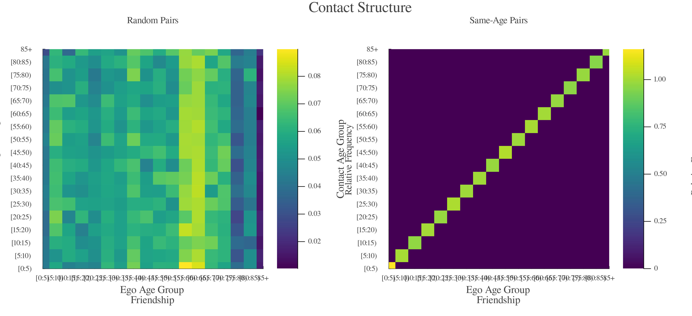
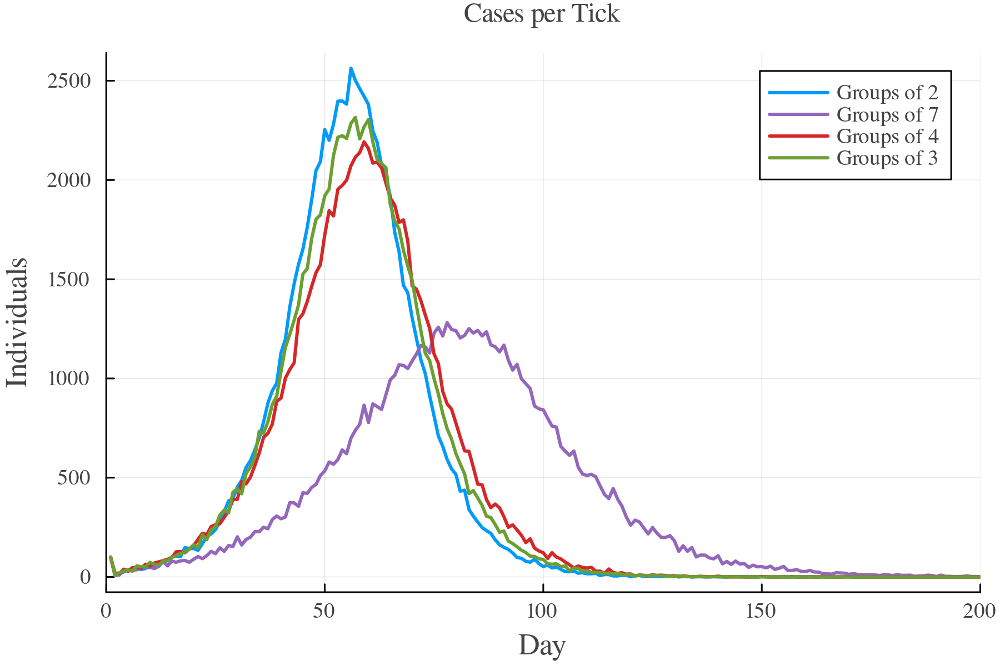

11 - Friendship Networks
Households, offices, and school classes are groups: everyone in such a setting can meet everyone else. Friendships work differently. If Anna is friends with Ben and Ben is friends with Clara, Anna and Clara are not necessarily friends. This tutorial shows how to model such networks with a custom setting type, once from a memberships file and once with a setting layer. It builds on the memberships and setting layers sections of the population tutorial and on custom setting types.
One Setting per Friendship
GEMS draws contacts at random among the members of a setting. It does not know who is friends with whom inside a setting, so a setting with five members is a group of five who are all friends with each other. Putting each individual and their friends into one setting therefore doesn't work, as Ben's friends would all meet each other in Ben's setting.
Instead, we give every friendship its own setting with two members. Anna and Ben share one setting, Ben and Clara share another one, and Anna and Clara share none. Each individual belongs to as many of these settings as they have friends.
First, we need the setting type. Copy the default config file to friendships.toml and add a Friendship section to its settings:
### Settings section of the config file ###
[Settings.Friendship]
[Settings.Friendship.contact_sampling_method]
type = "ContactparameterSampling"
[Settings.Friendship.contact_sampling_method.parameters]
contactparameter = 1.0In a setting of two, the contactparameter is the average number of times per day an individual meets their friend. With six friends, this adds up to six contacts per day. On top of households, offices, and school classes, this lets the default disease infect almost everyone within a few weeks, so we lower the transmission_rate to 0.04 in all examples. Infections between friends are logged with the setting character F.
Yes. declare_setting_type!("Friendship") declares the type and returns it. However, its settings will not draw any contacts until you give each of them a contact sampling method with contact_sampling_method!(sim, setting, method). The config file does this for all of them at once.
From a Memberships File
A memberships file can hold any network, e.g., one from a contact survey or a network generator. In this example, we build a small-world network ourselves. All individuals sit on a ring, in random order, and each of them is friends with the three individuals on either side. Neighbors on the ring share many of their friends. With a probability of rewire, a friendship goes to a random individual instead, which connects distant parts of the ring.
We take the individuals from the default population and write one row per friend and friendship:
using GEMS, DataFrames, CSV, Random
pop_df = Population() |> dataframe
k = 6 # friends per individual
rewire = 0.1 # probability that a friendship goes to a random individual
# put all individuals on a ring in random order
ring = shuffle(pop_df.id)
n = length(ring)
# link each individual to the next k/2 individuals on the ring
a = Int32[]
b = Int32[]
for i in 1:n, d in 1:(k ÷ 2)
push!(a, ring[i])
push!(b, rand() < rewire ? rand(ring) : ring[mod1(i + d, n)])
end
# drop the few friendships that were rewired to the individual themselves
keep = a .!= b
a, b = a[keep], b[keep]
# one setting per friendship, with both friends as members
friends = DataFrame(
id = vcat(a, b),
setting_type = "Friendship",
setting_id = vcat(1:length(a), 1:length(a)))
CSV.write("friendships.csv", friends)The file looks like this:
id,setting_type,setting_id
48213,Friendship,1
48213,Friendship,2
48213,Friendship,3
91307,Friendship,4
...Now pass the population, the memberships file, and the config file to the simulation:
sim = Simulation(
configfile = "friendships.toml",
population = pop_df,
membershipsfile = "friendships.csv",
transmission_rate = 0.04,
label = "Small World")
run!(sim)
rd = ResultData(sim)
gemsplot(rd, type = (:TickCases, :TickCasesBySetting), xlims = (0, 200))Plot

The lower plot shows that most infections now happen between friends, far more than in households, offices, and school classes. That's no surprise, as each individual meets their friends six times per day, but their household, office, or school class only once.
The IDs in a memberships file must match the population, which is why we pass the population as a dataframe here. A membershipsfile only works together with a population file or dataframe. If you build the population yourself, you can also skip the file and pass the table directly: Population(pop_df; memberships = friends).
memberships(population(sim)) returns the table back as a dataframe, with one row per friendship and member.
With a Setting Layer
If you don't have a network, a setting layer can draw a random one for you. PackedSettings(size = 2) puts the participants into pairs, and entries = 6 does that six times, each time in a new random order:
using GEMS
Friendship = declare_setting_type!("Friendship")
friendships = SettingLayer(Friendship;
assignment = PackedSettings(size = 2),
entries = 6)
sim = Simulation(configfile = "friendships.toml", setting_layers = friendships,
transmission_rate = 0.04)As the pairs are drawn at random, two friends of an individual are almost never friends with each other, and their ages are unrelated. The assignment decides who becomes friends. In the example below, we compare random pairs with AgeSortedSettings(size = 2), which sorts the participants by age before it pairs them, and plot the ages of the friends who meet:
using GEMS
Friendship = declare_setting_type!("Friendship")
# simulation with six friends per individual, paired by the given assignment
function friend_pairs(assignment, label)
layer = SettingLayer(Friendship; assignment = assignment, entries = 6)
return Simulation(configfile = "friendships.toml", setting_layers = layer,
transmission_rate = 0.04, label = label)
end
random_pairs = friend_pairs(PackedSettings(size = 2), "Random Pairs")
age_pairs = friend_pairs(AgeSortedSettings(size = 2), "Same-Age Pairs")
run!(random_pairs)
run!(age_pairs)
rd_r = ResultData(random_pairs)
rd_a = ResultData(age_pairs)
gemsplot([rd_r, rd_a], type = :AggregatedSettingAgeContacts, settingtype = Friendship,
show_values = false, size = (1200, 550))Plot

With random pairs (left), individuals meet friends of all ages, roughly in proportion to how many individuals of each age there are. With pairs of similar age (right), all contacts between friends lie on the diagonal, i.e., friends are in the same five-year age group. Both simulations end with about the same number of infections, but in the second one, the infection only passes between friends of the same age.
Other assignments and parameters change the network in other ways:
SpatialSettings(size = 2, spread = 2.0)pairs individuals who live near each other. This requires a population with household coordinates, e.g.,population = "SL".entries = Poisson(6)gives individuals different numbers of friends.eligible = ind -> age(ind) >= 12leaves out young children.
The same layer can go into the config file, below the contact sampling method of the Friendship section:
### Settings section of the config file ###
[Settings.Friendship]
[Settings.Friendship.contact_sampling_method]
type = "ContactparameterSampling"
[Settings.Friendship.contact_sampling_method.parameters]
contactparameter = 1.0
[Settings.Friendship.layer]
entries = 6
[Settings.Friendship.layer.assignment]
type = "PackedSettings"
size = 2With this config file, Simulation(configfile = "friendships.toml") is all you need. Remove the layer again before you use the config file with the memberships file from the previous section, or every individual gets both networks.
Friend Groups or Friendships?
Settings with more than two members turn friendships into groups of friends who all know each other. If each individual joins entries groups of size g, they have k = entries * (g - 1) friends. Of all pairs among these friends, about (g - 2) / (k - 1) are friends themselves. This share is called the clustering coefficient. For six friends per individual:
Group size g | entries | Clustering |
|---|---|---|
| 2 | 6 | 0 |
| 3 | 3 | 0.2 |
| 4 | 2 | 0.4 |
| 7 | 1 | 1 |
The example below compares these four networks. In a group, a member's contacts are spread across all other members, so we raise the contactparameter with the group size. That way, an individual meets each friend once per day in all four scenarios, and only the structure of the network differs.
Clustering only matters if a friend is likely to pass on the infection. Otherwise, two friends of an individual rarely both get infected, and it doesn't matter whether they know each other. With daily meetings and a transmission_rate of 0.04, friendships are the main route of infection, and the epidemic stays close enough to its threshold for the network's structure to make a difference.
using GEMS
Friendship = declare_setting_type!("Friendship")
# simulation with six friends per individual in groups of size g
function friend_groups(g)
layer = SettingLayer(Friendship;
assignment = PackedSettings(size = g),
entries = 6 ÷ (g - 1))
sim = Simulation(configfile = "friendships.toml", setting_layers = layer,
transmission_rate = 0.04, label = "Groups of $g")
# one contact per day with each of the g - 1 other members
for s in settings(sim, Friendship)
contact_sampling_method!(sim, s, ContactparameterSampling(g - 1))
end
return sim
end
sims = [friend_groups(g) for g in (2, 3, 4, 7)]
foreach(run!, sims)
rds = ResultData.(sims)
gemsplot(rds, type = :TickCases, xlims = (0, 200), legend = :topright)Plot

Groups of three and four hardly change the epidemic compared to random pairs. In groups of seven, where all of an individual's friends know each other, the epidemic peaks about three weeks later and at half the height, and around 10% fewer individuals get infected. In such a group, an infected individual's friends are often infected by another member before they meet, so many of the contacts between friends cannot pass on the infection anymore. Between random pairs, almost every friend is a new chance for the infection to spread.
Things to Keep in Mind
- Friendships add contacts on top of households, offices, and school classes, which raises the reproduction number. Lower other contact rates or recalibrate after adding them.
- Household quarantine and severe illness keep individuals out of their friendships as well.
- An individual with many friendships makes the simulation look up their settings a bit more slowly.
- See the setting layers section of the population tutorial for everything else that applies to layers.